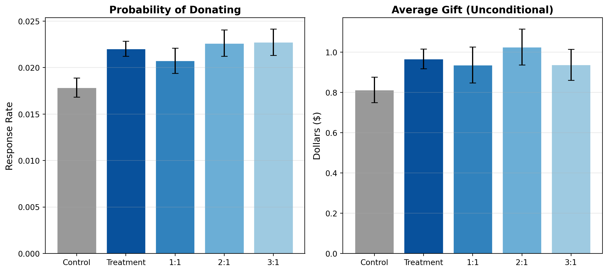

Does Price Matter in Charitable Giving? Evidence from a Large-Scale Natural Field Experiment
Author
Ariel Yuan
Published
April 22, 2026
Introduction
Karlan and List (2007) study whether matching grants increase charitable donations, and whether larger match ratios generate even more giving. They partnered with a large nonprofit organization that sent direct mail solicitations to over 50,000 prior donors. Individuals were randomly assigned to either a control group (standard letter) or a treatment group (letter announcing a matching grant). Within the treatment group, the match ratio was further randomized across three levels: 1:1, 2:1, and 3:1.
Because treatment was randomly assigned, any difference in donation outcomes between groups can be attributed causally to the matching offer itself, rather than to pre-existing differences among donors. This is the core advantage of a randomized experiment over observational data.
The key findings are that simply announcing a match significantly increases both the probability of donating and the revenue per solicitation. However, larger match ratios (2:1 or 3:1) have no additional effect relative to a simple 1:1 match — a surprising result with practical implications for fundraisers.
In this post, I replicate Table 1, Table 2A (Panel A), and Table 3 from the paper, and then visualize the main treatment effects as a chart.
Main Analysis
Data
The dataset contains 50,083 observations, each representing a prior donor who received a solicitation letter.
Total observations: 50,083
Treatment group: 33,396
Control group: 16,687
Balance Check (Table 1)
A well-designed randomized experiment should produce treatment and control groups that look similar on observable characteristics. Table 1 in the paper confirms this. I replicate the key rows below. I do not report formal t-tests here, but the descriptive balance is very close to the published table.
balance_vars = {'MRM2': 'Months since last donation','HPA': 'Highest previous contribution','freq': 'Number of prior donations','years': 'Years since initial donation','dormant': 'Donor activity flag (dormant)','female': 'Female','couple': 'Couple',}treatment = df[df['treatment'] ==1]control = df[df['control'] ==1]rows = []for var, label in balance_vars.items(): rows.append({'Variable': label,'All (Mean)': f"{df[var].mean():.3f}",'All (SD)': f"({df[var].std():.3f})",'Treatment (Mean)': f"{treatment[var].mean():.3f}",'Treatment (SD)': f"({treatment[var].std():.3f})",'Control (Mean)': f"{control[var].mean():.3f}",'Control (SD)': f"({control[var].std():.3f})", })rows.append({'Variable': 'Observations','All (Mean)': f"{len(df):,}",'All (SD)': '','Treatment (Mean)': f"{len(treatment):,}",'Treatment (SD)': '','Control (Mean)': f"{len(control):,}",'Control (SD)': '',})table1 = pd.DataFrame(rows)table1
Variable
All (Mean)
All (SD)
Treatment (Mean)
Treatment (SD)
Control (Mean)
Control (SD)
0
Months since last donation
13.007
(12.081)
13.012
(12.086)
12.998
(12.074)
1
Highest previous contribution
59.385
(71.177)
59.597
(73.052)
58.960
(67.269)
2
Number of prior donations
8.039
(11.394)
8.035
(11.390)
8.047
(11.404)
3
Years since initial donation
6.098
(5.503)
6.078
(5.442)
6.136
(5.625)
4
Donor activity flag (dormant)
0.523
(0.499)
0.524
(0.499)
0.523
(0.499)
5
Female
0.278
(0.448)
0.275
(0.447)
0.283
(0.450)
6
Couple
0.092
(0.289)
0.091
(0.288)
0.093
(0.290)
7
Observations
50,083
33,396
16,687
The means are nearly identical across the treatment and control groups for every variable, confirming that randomization was successful. Any differences in donation behavior we observe can be attributed to the treatment rather than pre-existing differences between groups.
Experimental Results (Table 2A, Panel A)
Table 2A presents the core experimental results. I compute three key outcome measures across the control group, the full treatment group, and the three match-ratio subgroups:
These values match the published Table 2A very closely. The control group response rate is 0.018, while the treatment group’s is 0.022 — a relative increase of about 22%. Unconditional giving is also higher in the treatment group ($0.967 vs. $0.813). Notably, the three match ratios produce very similar outcomes: increasing the match from 1:1 to 3:1 does not meaningfully boost donations.
Regression Analysis (Table 3)
To formally test these patterns, I estimate linear probability models with the binary donation indicator (gave) as the dependent variable. The paper labels these as probit regressions, but the coefficients are consistent with OLS estimates, as noted in the assignment instructions.
I replicate the main treatment-effect regressions for the full sample and for the 2005 donation-status subsamples using linear probability models. The estimated treatment effects closely match the magnitudes reported in Table 3.
# Column 1: Treatment effect on full sampley = df['gave'].valuesX1 = sm.add_constant(df[['treatment']].values)m1 = sm.OLS(y, X1).fit()# Column 3: Already gave in 2005 (dormant==1, n=26,217 matches paper)gave_2005 = df[df['dormant'] ==1]X3 = sm.add_constant(gave_2005[['treatment']].values)m3 = sm.OLS(gave_2005['gave'].values, X3).fit()# Column 5: Had not yet given in 2005 (dormant==0, n=23,866 matches paper)not_gave = df[df['dormant'] ==0]X5 = sm.add_constant(not_gave[['treatment']].values)m5 = sm.OLS(not_gave['gave'].values, X5).fit()
Column
Sample
Treatment
SE
Intercept
N
0
1
All
0.0042***
(0.001)
0.0179
50,083
1
3
Already gave in 2005
0.0031**
(0.001)
0.0086
26,217
2
5
Had not given yet in 2005
0.0054**
(0.002)
0.0280
23,866
The coefficient in column 1 is 0.0042, matching the paper’s reported value of 0.004. This means the matching offer increases the probability of donating by about 0.4 percentage points. Given a baseline rate of 1.8%, this is a roughly 22% relative increase.
Columns 3 and 5 show that the treatment effect is larger for donors who had not yet given in 2005 (0.0054) compared to those who already had (0.0031), suggesting that the match is somewhat more effective at reactivating lapsed donors. These estimates and sample sizes match the paper closely.
Something Additional
Visualizing Treatment Effects
The paper presents all its results in tables. To make the key finding more visually intuitive, I plot the response rates and average gift amounts across the control and treatment subgroups:

Donation Outcomes by Experimental Group
The visual pattern is clear. All three treatment groups show a lift in both response rate and average giving relative to the control group. But the three match ratios produce bars of essentially the same height, confirming that the existence of a match matters more than its generosity.
Why Randomization Supports a Causal Interpretation
An important feature of this study is that it uses a randomized field experiment rather than observational data. Because individuals were randomly assigned to treatment and control, the two groups are comparable in expectation on both observed and unobserved characteristics. The balance check in Table 1 confirms that this holds in the sample.
This means we can interpret the difference in donation rates between the treatment and control groups as the causal effect of receiving a matching offer. With observational data, there would always be a concern that donors who received a match differed from those who did not in ways that also affected their likelihood of giving (selection bias). Randomization eliminates this concern by design.
Conclusion
This replication confirms the central findings of Karlan and List (2007). Matching grants increase the probability of giving and raise average dollars per solicitation. However, the magnitude of the match ratio has no additional effect — a result that challenges conventional fundraising wisdom.
Overall, this replication successfully reproduces the paper’s key empirical findings and illustrates why randomized assignment allows a credible causal interpretation.